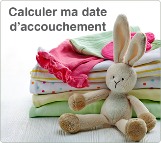

<article class="recepies-p1-with-button">
                
    <a href="#">
        Faire le calcul
    </a>
</article>
    
<style>

@font-face {
    font-family: Swiss721BT BoldRounded;
    src: url(fonts/UFONTS.COM_SWISS_721_BOLD_ROUNDED_BT.TTF);
}

@font-face {
    font-family: OpenSans;
    src: url(fonts/OpenSans-Regular_1.ttf);
}

article {
    -webkit-font-smoothing: antialiased;
    -moz-osx-font-smoothing: grayscale;
}

.recepies-p1-with-button {
    width:100%;
    max-width:360px;
    position: relative;
}

.recepies-p1-with-button img {
    max-width:360px;
    width: 100%;
    margin: 0 auto;
}

.recepies-p1-with-button a {

    text-decoration: none;
    box-shadow: none;
    text-shadow: none;

    background: #ec008c none repeat scroll 0 0;
    border-radius: 10px;
    bottom: 15px;
    box-sizing: border-box;
    display: block;
    font-family: Swiss721BT BoldRounded;
    left: 55px;
    position: absolute;
    z-index: 3;
    color: #fff;

    height: 40px;
    line-height: 40px;

    font-size: 20px;
    padding: 0 0 0 60px;
    width: 70%;
    white-space: nowrap;
    
}

.recepies-p1-with-button a::before {
    border-style: solid;
    border-width: 9px 0 9px 14px;
    bottom: 15px;
    content: "";
    display: block;
    height: 0;
    left: 25px;
    position: absolute;
    width: 0;
    z-index: 4;

    border-width: 6px 0 6px 10px;
    bottom: 14px;
    left: 15px;


    border-color: transparent transparent transparent #fff;
}


@media (min-width: 581px) {

    

}

@media (max-width: 1024px) {

    .recepies-p1-with-button a {
        font-size: 16px;
        left: 40px;
        padding: 0 0 0 52px;
    }
  
}

@media (max-width: 760px) {

    .recepies-p1-with-button a {
        font-size: 13px;
        left: 20px;
        padding: 0 0 0 42px;
    }
  
}
}

</style>